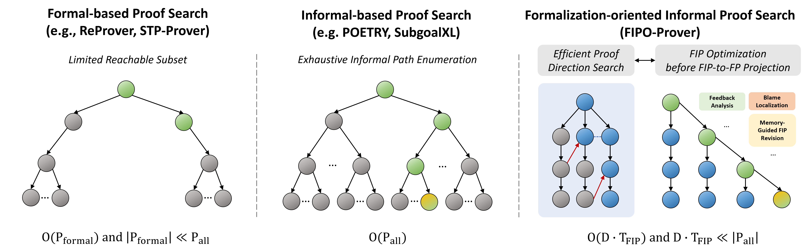
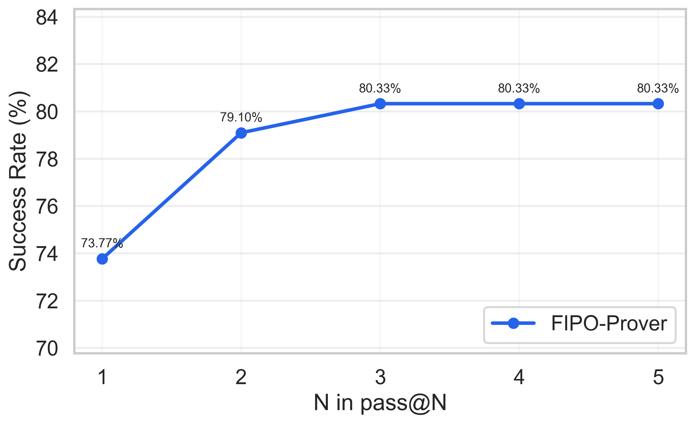
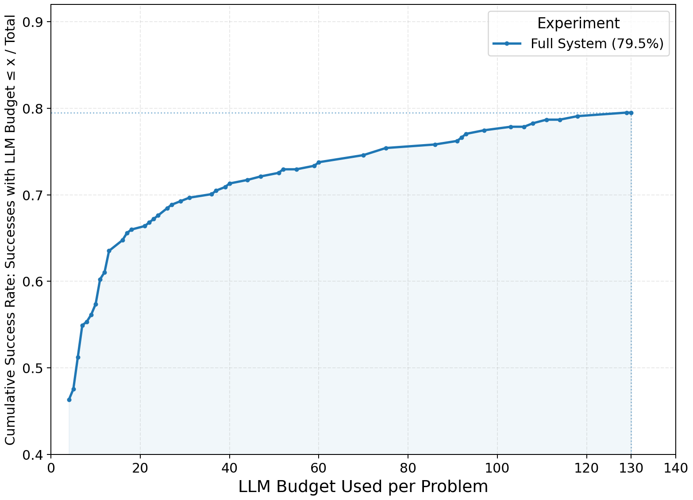
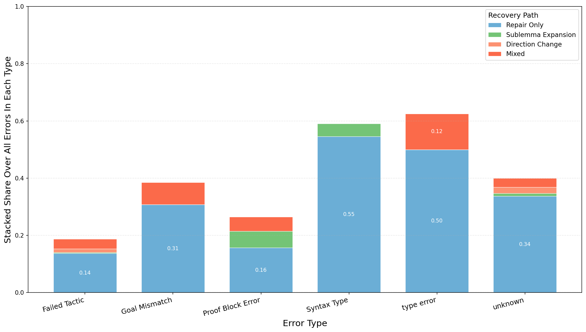
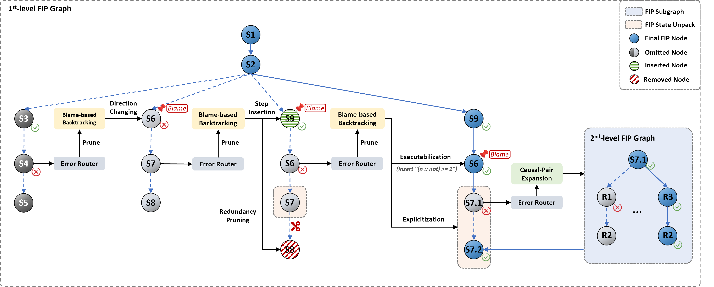
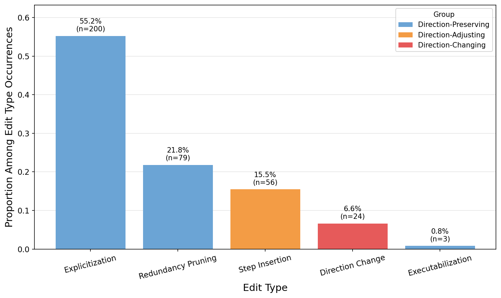
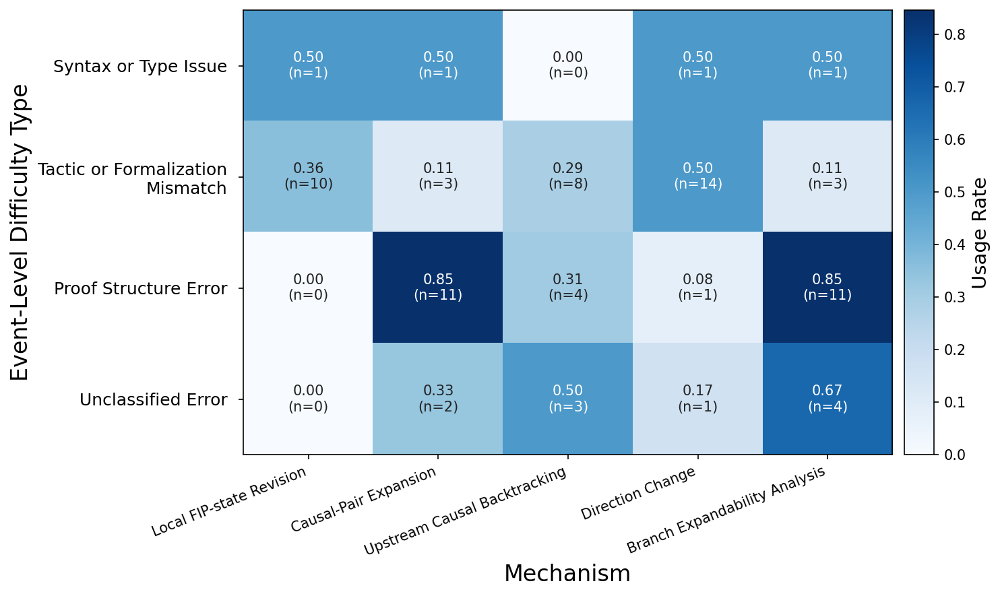
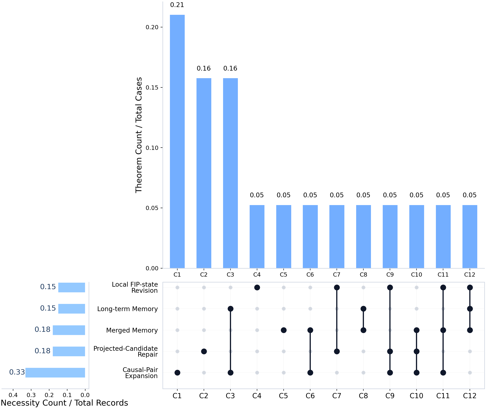
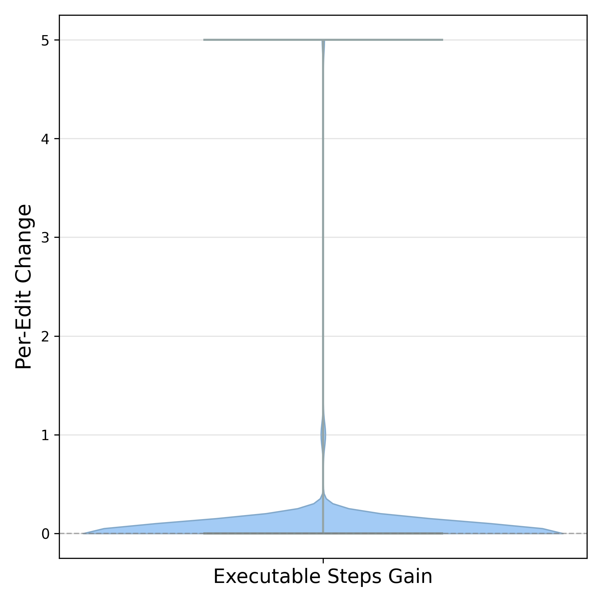

FIPO-Prover searches over proof directions in an evolving FIP graph and optimizes intermediate FIP states before projecting to formal Isabelle proofs. This is more efficient than exhaustively searching the full formal-proof space or the full informal-proof space.

Conceptual comparison of formal-based search, informal-based search, and FIPO-Prover's formalization-oriented informal-proof search.

Pass@N performance on MiniF2F-Test.

Cumulative success rate under matched LLM budgets.

Recovery-path distribution over verifier error types.
Informal proofs provide a natural interface for neural theorem proving, allowing large language models to reason in natural language before producing formal proof scripts. However, a persistent informal-to-formal gap remains: mathematically plausible reasoning may contain steps, dependencies, or intermediate claims that do not align with what a formalizer such as Isabelle can verify.
We introduce FIPO-Prover, a framework for Formalization-Oriented Informal Proof Optimization that represents informal proofs as structured Formalization-oriented Informal Proof (FIP) states organized by step-level causal pairs. FIPO-Prover performs verification-guided graph search over FIP states, combining local revision, causal-pair expansion, branch pruning, upstream causal backtracking, and memory-augmented search to make informal reasoning more projection-friendly.
On MiniF2F-Test, FIPO-Prover achieves 73.77% pass@1 and 80.33% pass@3, outperforming direct LLM formalization baselines and prior search-based frameworks. Our analysis shows that these gains arise not from additional sampling alone, but from optimizing intermediate proof states so that model-generated reasoning becomes more compatible with formal verification.
FIPO-Prover formulates informal-to-formal theorem proving as verification-guided search over structured informal proof states. Given a theorem statement, the system constructs a Formalization-oriented Informal Proof (FIP) state and iteratively optimizes an evolving FIP search graph under Isabelle feedback.
A FIP-state is a structured informal proof designed for reliable projection, diagnosis, repair, and optimization. Each step is represented as a causal pair (cause, effect), and dependencies form a directed graph. This makes the proof locally diagnosable: when projection to Isabelle fails, verifier feedback can be localized and traced upstream.
FIPO-Prover implements a set of verifier-feedback-driven recovery transitions:

FIP graph search with error routing, blame-based backtracking, and causal-pair expansion.
We evaluate FIPO-Prover on the Isabelle split of MiniF2F (488 high-school competition-level problems, 244 test / 244 valid). The system is verified step-by-step through PISA/Isabelle2022; a theorem counts as solved only when PISA reports a finished proof state.
| Category | Method | Metric | MiniF2F-Test | MiniF2F-Valid |
|---|---|---|---|---|
| Classical | Sledgehammer + heuristics | pass@1 | 20.9% | 18.0% |
| Classical | Thor | pass@1 | 29.9% | 28.3% |
| Classical | Thor + expert iteration | pass@1 | 35.2% | 37.3% |
| Classical | Thor + Magnushammer | pass@1 | 37.3% | 36.9% |
| Direct LLM | Gemini 3.1 Pro | pass@1 | 54.51% | – |
| Direct LLM | Gemini 3 Flash | pass@1 | 43.85% | – |
| Direct LLM | GPT-5-Codex | pass@1 | 32.79% | – |
| Direct LLM | DeepSeek-V3.2-Exp-Reasoner | pass@1 | 38.52% | – |
| Framework | DSP | pass@100 | 39.3% | 42.6% |
| Framework | POETRY | pass@1 | 42.2% | 42.2% |
| Framework | LEGO-Prover | pass@100 | 50.0% | 57.0% |
| Framework | SubgoalXL | pass@16384 | 56.1% | 61.9% |
| Framework | HybridProver | pass@128 | 59.4% | – |
| Framework | FIPO-Prover (Ours) | pass@1 | 73.77% | 81.55% |
| Framework | FIPO-Prover (Ours) | pass@3 | 80.33% | – |
Results are reported on MiniF2F Isabelle test and validation splits, with each baseline kept under its originally reported sampling budget. FIPO-Prover sets a new state of the art on the Isabelle split under strict pass@1 verification.
| Ablation | MiniF2F-Test | Absolute Drop |
|---|---|---|
| Full System | 73.77% | – |
| w/o Causal-Pair Expansion (CPE) | 69.20% | 4.57% |
| w/o CPE + Upstream Causal Backtracking / Memory | 63.11% | 10.66% |
| w/o CPE + UCB/Mem + Projected-Candidate Repair | 57.38% | 16.39% |
| w/o CPE + UCB/Mem + PCR + Local FIP Revision | 45.49% | 28.28% |
We fix the downstream formalizer and vary only the informal source. Final FIP-states from FIPO-Prover reach 53.69% with Gemini 3.1 Pro and 61.48% after lightweight postprocessing, outperforming raw LLM informal proofs, DSP, and LEGO-Prover. This confirms that FIP optimization itself improves formalization utility, not just sampling budget.
Analysis of successful trajectories shows that Explicitization dominates the revision distribution (55.2%), while Direction Change accounts for only 6.6%. FIPO-Prover mainly decomposes coarse single-step reasoning into finer, locally checkable transitions, making FIP-to-FP projection easier.

FIP transformation grouped by proof-strategy revision categories.

Recovery-transition usage conditioned on verifier error types.

Theorem-level necessity of FIP graph transitions in recovered successes.

Structural changes in non-direction-changing FIP revisions.
@inproceedings{ma2026fipo,
author = {Ma, Jingkun and Wang, Yuchao and Huo, Yujia and Wong, Derek F.},
title = {FIPO-Prover: Formalization-Oriented Informal Proof Optimization for Efficient Formal Theorem Proving},
booktitle = {Proceedings of the 3rd AI for Math Workshop at the 43rd International Conference on Machine Learning (ICML)},
year = {2026},
}